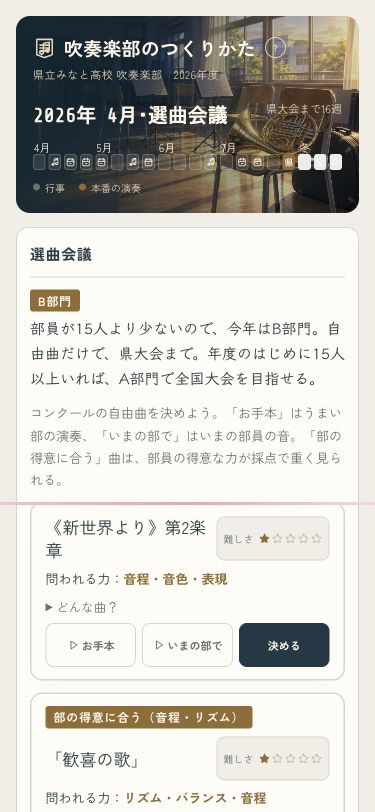
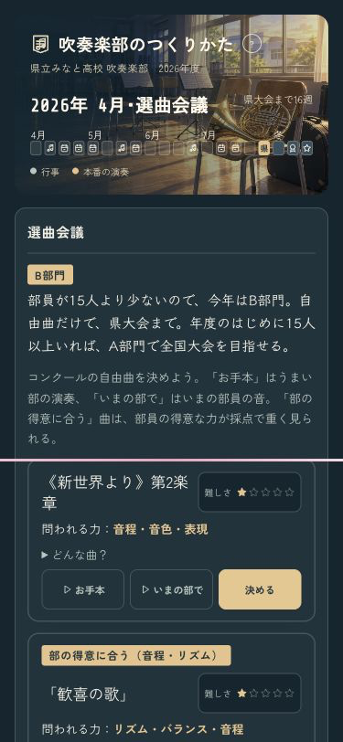
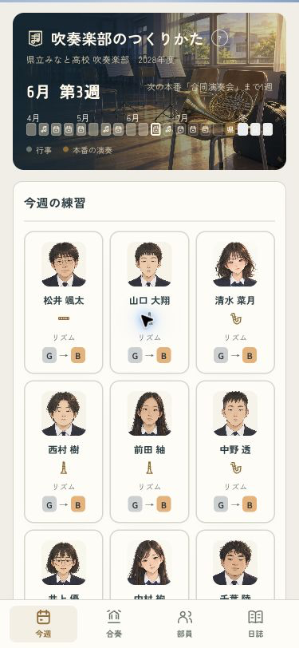
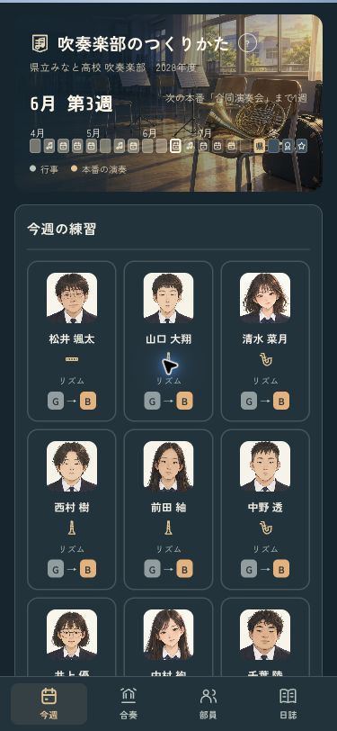
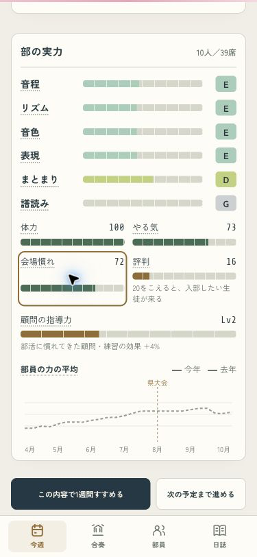

いない楽器の審査表示を削除。会場慣れは新年度へ持ち越し。威風堂々の静かな前半を補い、つながる音の音色も滑らかにしました。




前半は約4dB聴き取りやすく。後半と最大ピークは同じです。実際の音源とホールで計測しました。
| 編成 | 前半 LUFS | 後半 LUFS | 最大ピーク dBFS |
|---|---|---|---|
| お手本39人 | −28.2 → −24.5 | −13.1 → −13.1 | −1.5 → −1.5 |
| 能力65・39人 | −26.3 → −22.4 | −14.8 → −14.8 | −2.8 → −2.8 |
| 能力65・5人 | −29.2 → −25.3 | −19.5 → −19.5 | −7.3 → −7.3 |
年度末72 → 新年度72。楽器決めと選曲を終えた後も維持しています。週ごとの減少はこれまでどおりです。

4月から翌年度まで69操作で進めてエラーなし。全15曲の自動育成比較は修正前と同じ結果。iPhoneへ更新し、起動と実行中プロセスまで確認しました。実機での聴感は未確認です。
ブランチ：codex/design · pushなし